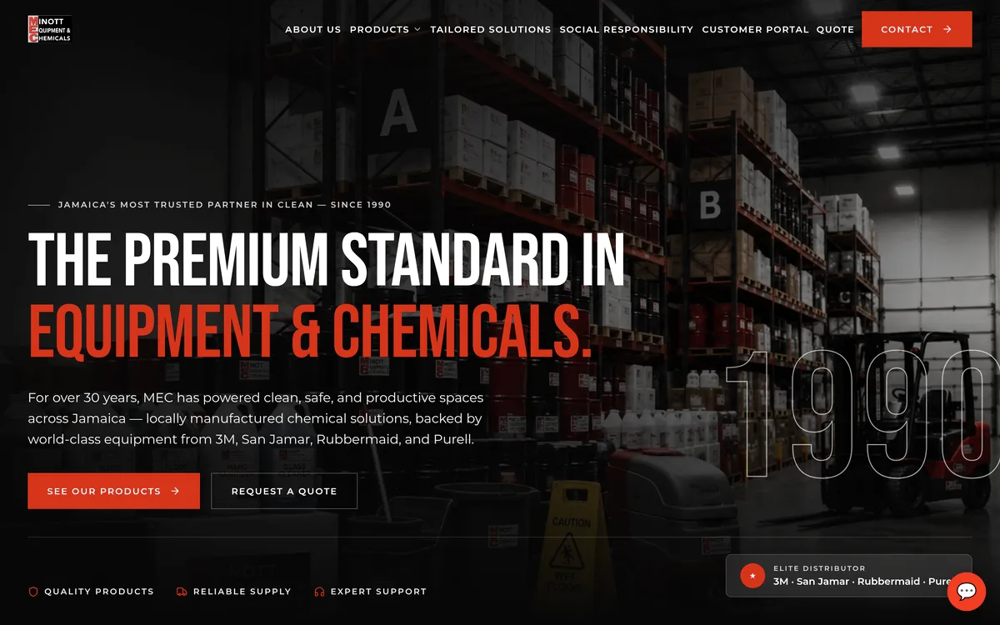
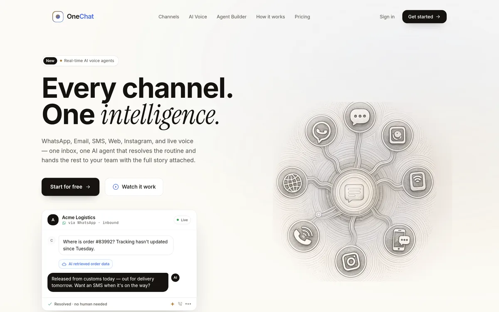

Consulting, software, and AI. Built and run in Kingston.
What we do
Three things we do. One team doing them.
Design and engineering under one roof, so the site, the systems behind it, and the AI in front of it all fit together.
01Consulting & AutomationFind the friction. Automate it away.03
02Web Design & Custom ApplicationsWebsites and software, built to work.04
03Conversational AIOne intelligence. Every conversation.05
01
Consulting & Automation
Find the friction. Automate it away.
We assess how your operations run, automate the repetitive work, and build custom solutions that give you time back.
Assess
We map how your business runs today and find where time, money, and customers leak out.
Build
We design and build the fix — an automation, a custom tool, or a new process — whatever the problem actually needs.
Run
We keep it live, measure what it saves you, and refine it over time.
02
Web Design & Custom Applications
Websites and software, built to work.
Marketing sites, catalogs, and custom web applications — designed to look right and engineered to hold up.
Design
We shape the look, the structure, and the flow around what your customers need to do.
Build
We engineer it properly — the catalog, the forms, the integrations, the custom logic your business needs.
Launch & maintain
We ship it, and we stay on to keep it fast, secure, and current.
03
Conversational AI
One intelligence. Every conversation.
Voice agents, custom chatbots, and OneChat — our platform that resolves the routine across every channel and hands the rest to your team.
Voice agents
Human-natural voice agents on a dedicated +876 line, answering in around 480 milliseconds, grounded in what your business actually knows.
Custom chatbots
Grounded in your knowledge base, connected to your tools, and handed to your team with full context the moment a person is needed.
OneChat
WhatsApp, Email, SMS, Web, Instagram, and live voice — one inbox, one AI agent that resolves the routine and hands the rest to your team.
FloProLet’s talk
Tell us what needs fixing.
A short note is enough. We reply within 4 business hours.
Email
autom8@floproltd.com
Phone · WhatsApp
+1 (876) 824-2268
Web
floproltd.com
FloProBook 02 of 04
02
Meet Antoinette.
The agent we built for ourselves.
Meet the intelligence
Meet Antoinette, the agent we built for ourselves.
She answers our phone and our website, only says what FloPro actually knows, and hands the conversation to a person the moment one is needed.
Conversational AI
One agent, on every channel your customers use.
The same build runs for our clients, on their own number, in their own voice.
Voice agents
Human-natural voice agents on a dedicated +876 line, answering in around 480 milliseconds, grounded in what your business actually knows.
Custom chatbots
Grounded in your knowledge base, connected to your tools, and handed to your team with full context the moment a person is needed.
OneChat
WhatsApp, Email, SMS, Web, Instagram, and live voice — one inbox, one AI agent that resolves the routine and hands the rest to your team.
The proof
One intelligence. Every conversation.
60%of tier-one support volume auto-resolved
~480msvoice latency, answered on the first ring
6channels, one thread
Your line
Want one answering for your business?
Tell us about your customers and your channels. We will show you what she would sound like on your line.
FloProLet’s talk
Tell us what needs fixing.
A short note is enough. We reply within 4 business hours.
Email
autom8@floproltd.com
Phone · WhatsApp
+1 (876) 824-2268
Web
floproltd.com
FloProBook 03 of 04
03
Selected work.
A client-facing site and a product of our own. Both live, both still looked after by us.
Selected work — 01
Minott Equipment & Chemicals
Jamaica's trusted industrial and janitorial supplier since 1990.
Web design · Custom application

We designed and built their product catalog and quote-request site — a clean brochure-and-catalog experience for a 30-year-old supply business.
Livemce.floproltd.com ↗
Selected work — 02
OneChat
Omnichannel customer support with real-time AI voice.
Custom application · Conversational AI

Our own product — designed, built, and run by FloPro. WhatsApp, Email, SMS, Web, Instagram, and voice in one inbox, resolved by one AI agent.
Liveonechat.floproltd.com ↗
FloProLet’s talk
Tell us what needs fixing.
A short note is enough. We reply within 4 business hours.
Email
autom8@floproltd.com
Phone · WhatsApp
+1 (876) 824-2268
Web
floproltd.com
FloProBook 04 of 04
04
The studio.
From Kingston. Built for what’s next.
The studio
From Kingston. Built for what’s next.
FloPro is a Jamaica-built studio for operations consulting and automation, web design and custom applications, and conversational AI, for businesses that want to run better.
Since 2024
We do not sell software and walk away.
FloPro started in 2024 on a simple conviction: technology should make a business easier to run, not harder. We work out where the day stalls, design and build the fix, whether that is a system, a site, or an AI agent, and we stay on to run it.
Global-standard engineering, from a company that answers its own phone.
Teams across finance, automotive, and tourism
Co-founder
William C. Ashley
Leads strategy and operations — mapping where a business loses time and what "resolved" should actually mean before a line of the agent is written.
Co-founder
Liam Datt
Leads the technical work — the web applications, the voice infrastructure, the agents, and the platform that ties every channel together.
FloProLet’s talk
Tell us what needs fixing.
A short note is enough. We reply within 4 business hours.